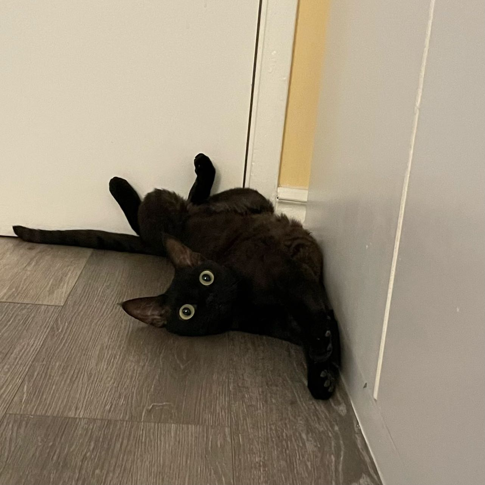

My Favorite Pets
My 1st pet

Bacon Q. Dog is a 9yr old labradoodle. He prefers to spend his days lounging among the three different beds/couches that his family has gifted him. He enjoys a walk or two around the neighborhood, as long as he can pretend that he doesn't see any of the other animals to avoid the embarrassment of not wanting to admit he has no wolf-like skills in chasing them.
At night just as the rest of the family is ready to relax, Bacon suddenly wants to release all of his energy. He will place his toys on a mini couch and frantically drag the couch around, giving his toys "a ride." There is also a lot of rolling. Lots and lots of rolling.
My 2nd pet
Santa is not your typical feline companion. With his luscious fur resembling freshly fallen snow and those twinkling emerald eyes that seem to hold the secrets of the North Pole, he's a cat that brings a touch of enchantment into every room he enters. Santa's personality is equally charming; he's both mischievous and affectionate. Whether he's playfully batting at a dangling ornament or curling up in your lap on a chilly winter's night, he never fails to bring warmth and joy to your home. His presence during the holiday season feels like a magical gift, a reminder that even in the busiest times, there's room for a little wonder and cuddles
But Santa's mystique extends beyond his appearance and demeanor. He has an uncanny knack for finding hidden spots where he can observe the world from a safe distance, as if he's keeping a watchful eye over the household. And during the festive season, you can count on him to make the holiday decorations his personal playground, ensuring that no tinsel or ribbon goes unexplored. Santa is more than just a pet; he's a cherished member of the family who brings an extra dose of cheer and enchantment to every day, making your home feel like a year-round winter wonderland.
My 3rd pet

Smoothie is a cat of extraordinary grace and elegance. With a sleek, velvety coat that glistens like polished marble, she moves through the house with a quiet and regal demeanor that demands admiration. Her enchanting, emerald-green eyes seem to hold the mysteries of the universe, and when she gazes at you, it's as if you're peering into the depths of a tranquil forest. Smoothie's presence brings a sense of serenity to your home, as if her very existence is a soothing balm for the soul.
Beneath her sophisticated exterior lies a heart filled with warmth and affection. Smoothie has an uncanny ability to sense when you need a comforting nudge or a gentle purr to ease your worries. Her purring, like a soft and melodious symphony, has the power to melt away stress and make even the busiest of days feel tranquil. She's not just a cat; she's a source of solace and a reminder that beauty and kindness can coexist in perfect harmony. Smoothie is a beloved companion who adds a touch of elegance and love to your life every day.
My 4th pet

Welcome to the enchanting world of Maple, the furry superstar of our hearts and this delightful corner of the internet. Maple's website is your gateway to the captivating life and adventures of this charming feline companion. With her captivating amber-and-ivory coat and eyes that shimmer like golden leaves in the autumn sun, Maple is a true feline beauty.
This virtual haven is dedicated to sharing Maple's playful escapades, her heartwarming moments, and the wisdom she imparts through her soothing purrs. Dive into Maple's world as we unravel her tales of curiosity, cuddles, and the art of living in the moment. Join us on this delightful journey as we celebrate Maple's unique spirit and the joy she brings to our lives.
My 5th pet

Welcome to the charming online realm of Nuonuo, the enchanting feline muse who steals hearts with a mere glance. This website is a loving tribute to our beloved Nuonuo, a cat of grace and wonder, whose fluffy coat is a canvas of soft, delicate fur reminiscent of freshly fallen snow.
Those sparkling, almond-shaped eyes hold the secrets of a world only she can fully comprehend, and through this digital sanctuary, we invite you to explore her world. Here, you'll discover tales of Nuonuo's playful escapades, her endearing quirks, and the tranquil moments she shares with us, offering comfort through her gentle purrs. Join us in celebrating the joy, curiosity, and the simple pleasures of life that Nuonuo embodies. Let her whisk you away into a world of feline enchantment as we honor her unique presence in our lives.